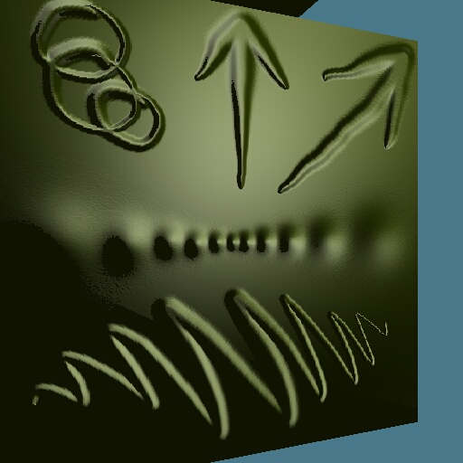

Bump Mapping:
A surface is raised or lowered a small amount according to a texture map. This allows easy generation of complex bumps, ripples, imperfections, &c. This effect is eye dependent, rather than just drawing a 'bumpy' texture on a face it actually affects the lighting calculation to represent the deformed surface. A great amount of detail can be placed on a very simple surface for low cost.

Test texture for bump mapping. This is one from a series of eye positions. The highlighting changes as the eye position changes, but even in this single picture the box appears to have a 3D pattern on it. The geometry of the model is perfectly flat.
copyright 2/14/1999 Vince Scheib